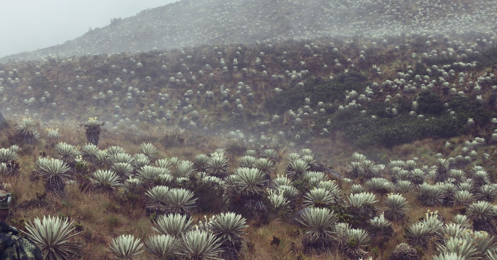
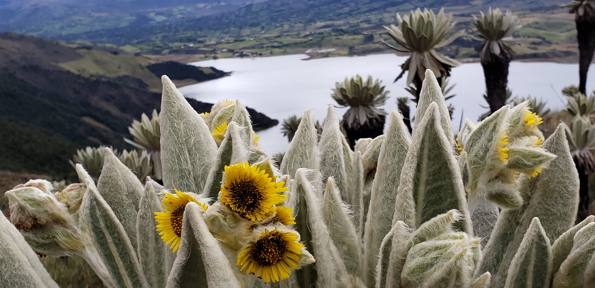
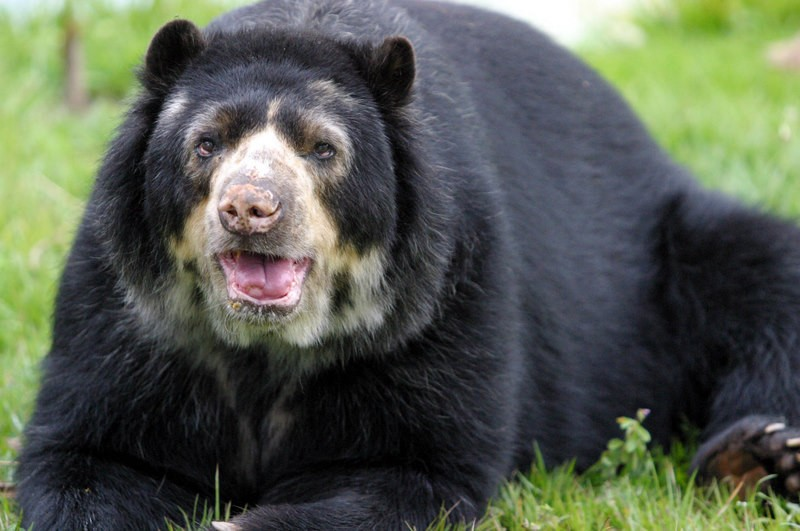
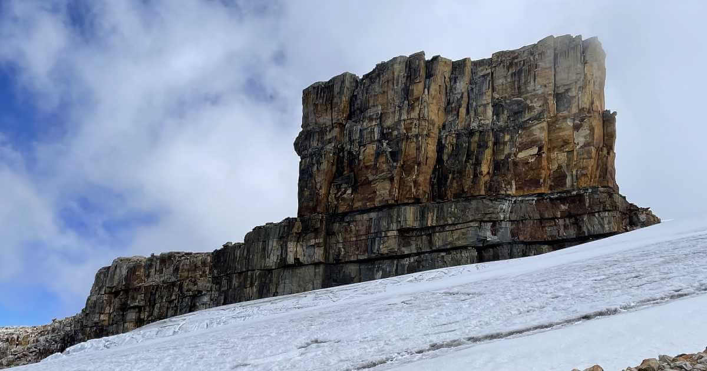
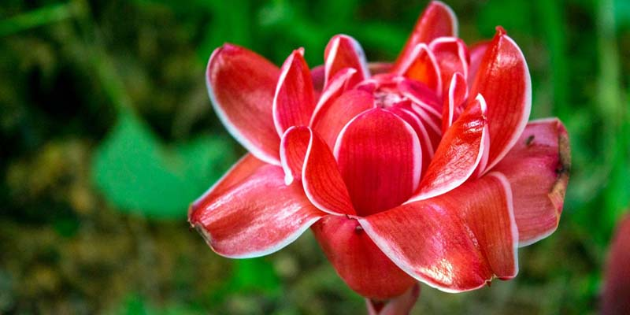

|

En la region cundiboyacense se poseen todos los pisos termicos del pais, pero ciendo las regiones de los paramos sus ecosistemas mas importantes por proveer el agua a una gran cantidad de personas |

los Paramos son ecosistemas estratégicos globales en los que nace el agua dulce, además es un repositorio natural que apoya el control del dióxido de carbono ya que lo retiene en su subsuelo, ayudando a evitar el calentamiento global. |

El frailejón es una planta herbácea perenne que crece en los páramos de América del Sur, es una especie clave en los ecosistemas de páramo, ya que ayuda a regular el flujo de agua y a mantener la humedad en la región |
|

El oso de anteojos (Tremarctos ornatus), también llamado como Oso de antifaz, oso andino, u oso de cara corta andino, es una especie de mamífero omnívoro de la familia Ursidae, nativa de las montañas de los Andes de Sudamérica.Es la única especie existente de su género y se encuentra en peligro de extincion |

El Parque Nacional Natural Güicán, Cocuy y Chita es uno de los 59 parques nacionales naturales de Colombia.Está ubicado al centro-oriente del país, en el límite entre los departamentos de Boyacá, Casanare y Arauca, con una extensión de 306.000 ha (3.060 km²). |

Cundinamarca posee una gran riqueza en recursos naturales, especialmente hídricos, por lo cual en el departamento se encuentran varias reservas naturales como parte del programa de protección ambiental. |
Noticias